Round 1 is played on the unsorted strip: tile letters only, no ruler, no numbers, no angles. With a sorted strip the room reads an index off the sheet and never has to invent a description, so the discovery never happens. After round 1 the sorted strip replaces it, and that swap is the "fix your code" beat.
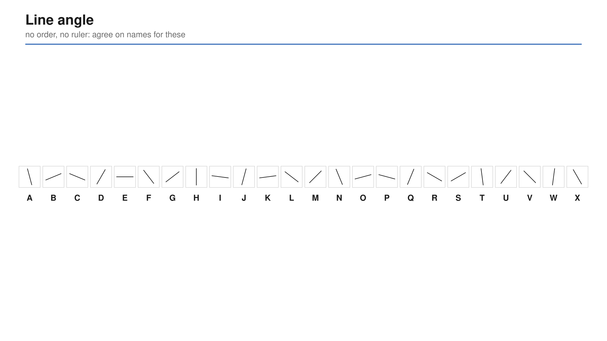
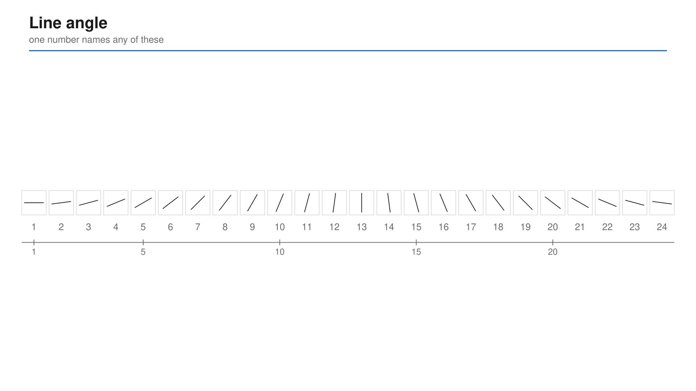
One shared catalogue per family, projected. Cell names are read off the axes, never off a label under a tile, so the catalogue cannot be used as a lookup table.
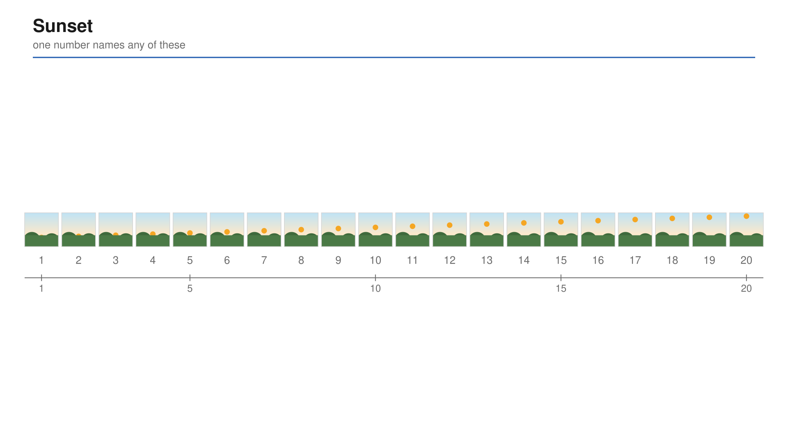
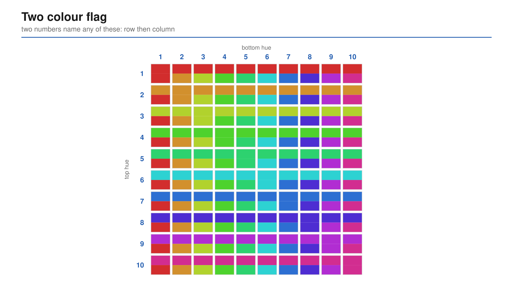
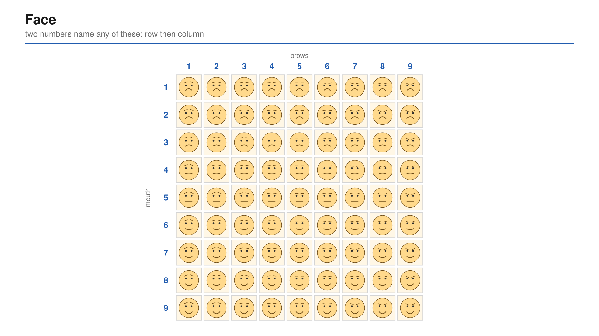
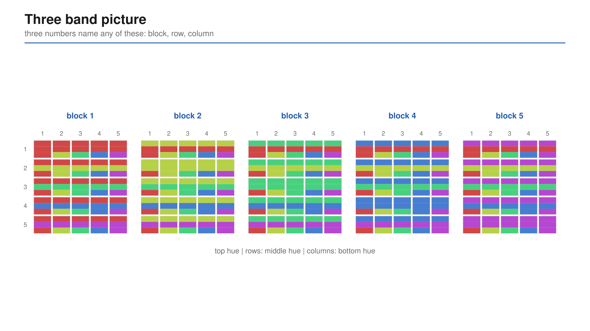
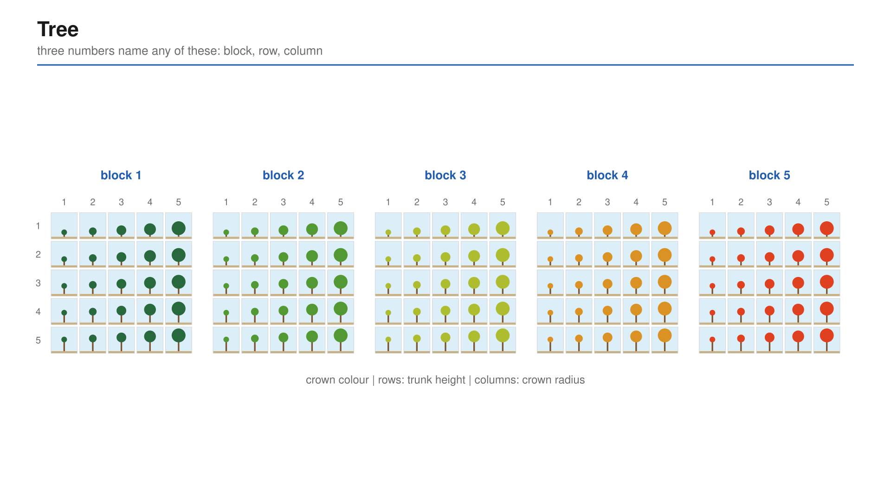
A5, folded down the middle and stood as a tent so it faces the sender only. The picture on one face; on the other, the score of every cell. The pair turns it over after the guess, finds the cell their partner picked, and reads the number off it. The instructor does no arithmetic and asks only for hands: who has a 3, a 2, a 1, a 0.
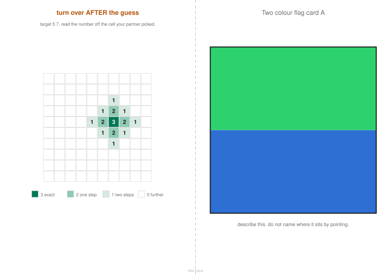
5 7. This is the card frame B1 of the deck is built
on: green over blue lands one step away and scores 2, 5 7 scores 3.
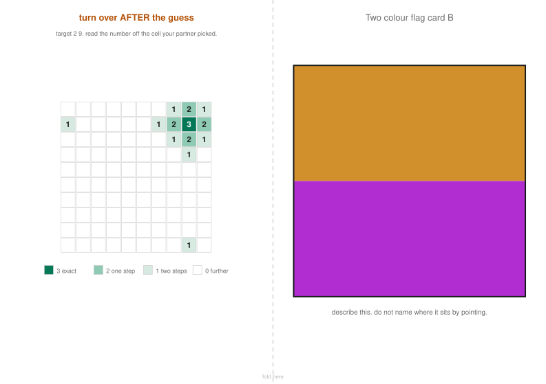
2 9. Hue is circular, so the scoring diamond spills
to the opposite edges. Wrap is computed and drawn, never explained.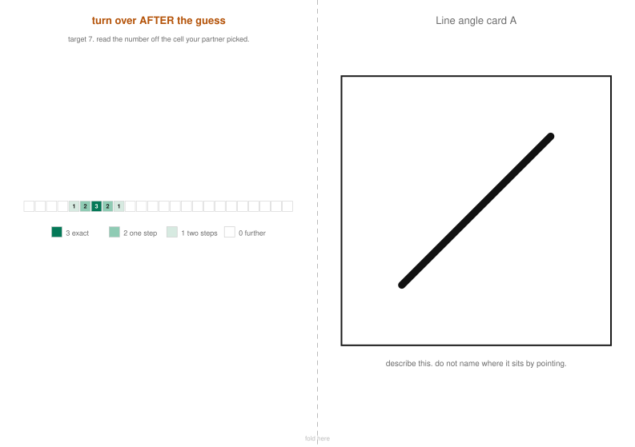
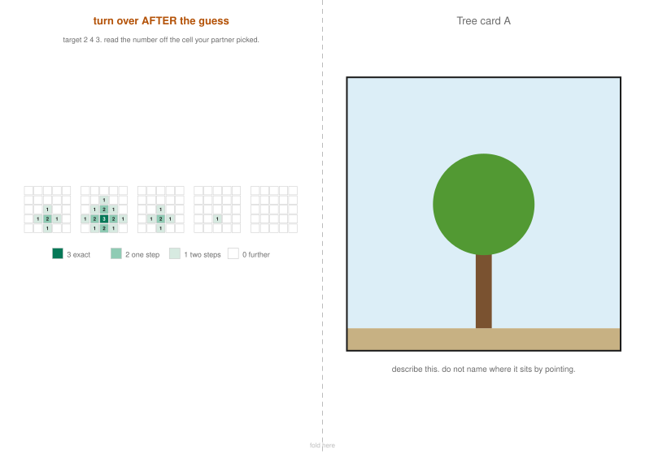
2 4 3. Three parameters, so the diamond spreads
across block boundaries.| Order | Family | Parameters | Images | Cell name | The lesson it carries |
|---|---|---|---|---|---|
| 1 | Line angle | 1 | 24 | 7 |
the code is a number |
| 2 | Sunset | 1 | 20 | 14 |
most of the picture never varies, throw it away |
| 3 | Two colour flag | 2 | 100 | 5 7 |
words are a coarse code, numbers are a fine one |
| 4 | Face | 2 | 81 | 7 2 |
a shared prior makes a short code work |
| 5 | Three band picture | 3 | 125 | 3 1 5 |
the picture simply is three numbers |
| 6 | Tree | 3 | 125 | 2 4 3 |
agree on the slots and the scale, or the code means nothing |
475 images in all. Scoring is one rule for every family:
score = max(0, 3 - d), where d is the Manhattan distance in catalogue
steps, wrapping where the parameter is circular.
The dry run. Two colleagues, no briefing beyond the rules, F1, two rounds with "fix your code" between them. It passes if their score rises and their round 2 slip contains a number. If the slip is still a word, the game has failed at its single job, and the fix is a finer catalogue rather than more explaining. The build plan rates this above the other eight checks together, and it has not been done.